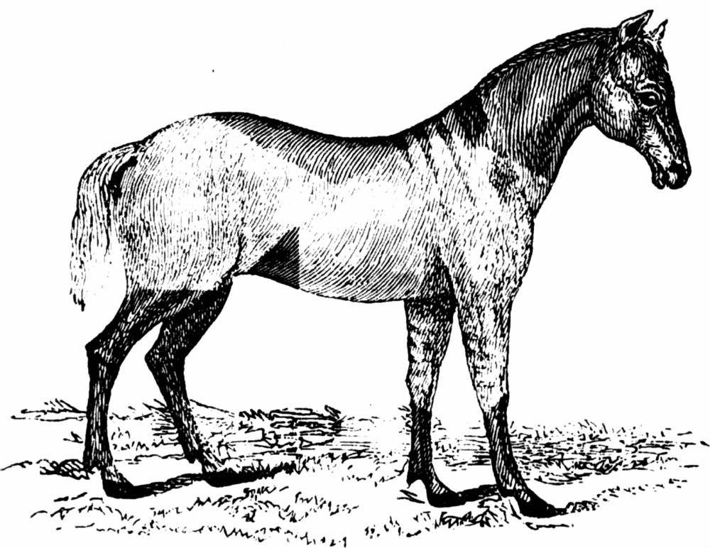

马
马在古代的历史情况已经模糊不清了。在新石器时代的瑞士湖上住所中发现过这种动物在家养状态下的遗骸[1]。现在马的品种是很多的，查阅一下有关马的任何论文，就可以知道[2]。只要看一看大不列颠的土著驮马（Pony），就可知道谢特兰岛（Shet land Isles）、威尔斯（Wales）、新森林区（New Forest）[3]以及得文群（Devonshire）各地的驮马是有区别的；这样的事例还有不少，在那广大马来群岛（Malay Archipelago）的各个岛上的马也有差异[4]。某些品种在大小、耳形、鬣长、体部比例、左右肩胛骨间的背部隆起、臀部的形状上、特别是在头的形状上，表现了巨大的差异。比较一下竞跑马（race-horse）、挽马（dray-horse）以及谢特兰岛驮马的大小、姿势和性情吧；并且看一看它们之间的差异比马属（Equus）的其他现存的七八个物种之间有大得多的差异吧。
关于那些没有构成特殊品种的特征的以及没有大到或残损到足以叫做畸形的个体变异，我没有搜集许多例子。“西兰塞斯特农学院”（Cirencester Agricultural College）的布朗（G．Brown）先生特别注意过我们的家养动物的齿系，他写信向我说过，“数次看到颚中的永久门齿为8对，而不是6对”。只有雄马应当有犬齿；但偶尔在雌马中也会发现有犬齿，虽然是小型的[5]。肋骨的正常数目为18对，但是尤亚特[6]肯定地说过具有19对肋骨的并不罕见，多余的一对肋骨永远是生在后面的。一个值得注意的事实是：在梨具吠陀（Rig-Vêda）中记载的古代印度马只有17对肋骨；曾经叫人注意这个问题的皮埃垂门（M．Piétrement）[7]举出种种理由来说明这种叙述是充分可信的，他特别指出印度人在往昔是仔细计算动物的骨的。我曾读过有关腿骨变异的若干报告；波赖斯（Price）先生[8]谈到在爱尔兰马中踝关节部有一块多余的骨并且胫骨和距骨之间有某些畸形物，这种情形是很普通的，但这不是因病而发生的。按照高得里（M．Gaudry）[9]的材料，常常可以观察到具有机骨（trapezium）和第五掌骨痕迹的马，这样“人就看到了三趾马——一种近似而灭绝了的动物——的脚的正常构造以畸形方式在马的脚中出现”。在许多地方，曾经观察到在马的额骨上有角状突起：在波西瓦尔（Percival）先生描述的一个例子中，这等角状突起约比眼窝突起高出二英寸，并且“同5～6个月的牛犊的角很相似”，它们的长度从半英寸到四分之三英寸[10]。亚莎拉（Azara）描述过南美的两个例子：这等角状突起的长度竟在8～4英寸之间，在西班牙也有其他的事例。
当我们考虑一下现今在全世界、甚至在同一国家内生存的马的品种的数量时，当我们知道自从最早的已知记录以来马品种的数量大大增加时[11]，马曾经发生过大量的遗传变异就无可怀疑了。甚至像颜色那样无常的性状，赫法克（Hofacker）[12]发现在同一颜色马交配的216个例子中，只有11对产生了颜色完全不同的马驹。正如罗武（Low）教授[13]所说的，英国竞跑马在遗传上提供了一个最适切的证据。在判断它的获胜可能性中一种竞跑马的系谱比它的外貌更加有价值；“赫洛得王”（King Herod）曾得奖金201505英镑，获胜497回；“蔼克立”（Eclipse）获胜334回。
各个不同品种间的全部差异量是不是在家养下发生的，还是一个疑问。根据最不相同的品种[14]在杂交时的能育性，博物学者们认为所有品种都是从单一物种传下来的。很少人同意史密斯（H．Smith）上校的意见，他相信它们是从不下五个颜色不同的原种传下来的[15]。但是，因为在第三纪（Tertiary periods）的后叶已有几个马的物种和变种存在了[16]，并且因为卢特梅耶发现已知的最早家养马在头骨的大小和形状上是有差异的[17]，所以我们不应就认为所有品种都是从单一物种传下来的这种说法是可以深信无疑的。北美和南美的土人都会把野化的马重新养驯，所以世界各地的土人曾经饲养过一个以上的当地种或自然族，并不是不可能的。散逊（M．Sanson）[18]认为他证明了有两个不同的物种曾被饲养过，一在东方，一在北非；并且这两个物种在腰椎的数目以及其他种种部分上都有差异；不过散逊似乎认为骨骼上的性状很少变异，这肯定是一个错误。我们确知现在已经没有任何原始的或真正野生的马存在了；因为一般相信东方的野生马是逃跑出去的家养动物[19]。所以，如果说我们的家养品种是从若干物种或自然族传下来的话，那么所有这些都已经在野生状态下灭绝了。
关于马曾经发生变异的原因，生活条件似乎产生了相当的直接作用。福勃斯（D．Forbes）先生有过非常好的机会去比较西班牙马和南美马，他告诉我说，智利马的生活条件同它们的祖先在安达鲁西亚的生活条件几乎是一样的，所以它们没有发生变化，而彭巴草原（Pampas）马和普诺（Puno）驮马则相当地改变了。无疑地由于生活在山岳和岛屿上，马大大缩小了并且外观也改变了；这显然是因为营养不足或缺少多种食物的缘故。谁都知道北方诸岛（Northern Islands）以及欧洲山岳上的驮马是多么小而且多么粗陋。科西加（Corsica）和撒地尼亚（Sardinia）两地都有土著的驮马；在弗吉尼亚（Virginia）沿岸的一些岛屿上过去有[20]、而且现在还有同谢特兰岛驮马相似的驮马，人们相信这种驮马是由于处在不适宜的环境条件中而发生的。我听福勃斯先生说，栖息在科迪勒拉（Cordillera）山脉的极高地带的普诺驮马是非常小的，同它们的祖先——西班牙马很不相似。1764年有一些马输入到更南的马尔维纳斯群岛，它们的后代在大小和体力上退化得如此厉害[21]，以致不适于骑着它们用套索去捕捉野牛；所以为着这个目的必须花巨大费用从拉普拉塔去运新马。在南方各岛和北方各岛以及在若干山系中繁殖的马之所以缩小，简直不能说是由于寒冷的缘故，因为在弗吉尼亚的各岛以及地中海的各岛上也有同样缩小的情形发生。马能耐严寒，因为野生马群在北纬56°西伯利亚（Siberia）平原上生活着[22]，而且马原来一定曾经生活在每年降雪的地方，因为马长期地保存了把雪扫走去找食下面草类的本能。东方的野生鞑靼马（tarpan）就有这种本能；苏利文（Sulivan）海军上将告诉我说，近来和以前由拉普拉塔引进到马尔维纳斯群岛的某些已经野化了的马，也有了这种本能；后面这一事实值得注意，因为这等马的祖先在拉普拉塔已经有许多代没有这种本能了。另一方面，马尔维纳斯群岛的野生牛却从来不会把雪扫走，当地面长期覆雪的时候，它们就要饿死。在美洲北部的马是由占领墨西哥的西班牙人引进的那些马传下来的，它们具有同样的习性，土著野牛（Bison）也有这种习性，但从欧洲引进的牛却不这样[23]。
马能在严寒下同时也能在酷热下繁盛，因为它们在阿拉伯和北非据知已经达到了最高度的完善化，虽然并不高大。多湿对于马的害处显然比热或冷还要厉害。在福克兰诸岛的马由于潮湿而受到了很大的损害；这种情形或者可以用来部分地解释下述的奇异事实，即在孟加拉湾[24]以东的广大潮湿区域——阿瓦（Ava）、别古、暹罗（Siam）、马来群岛、琉球群岛（Loo Chuo Islands）以及中国的大部分地方找不到充分大的马。我们向东走去，一直到日本，马又重新获得了充分大的体格[25]。
大多数家养动物的一些品种之所以受到饲养，是由于它们的珍奇或美丽；但是马完全由于它们的实用才受到人们的重视。因此，半畸形的品种就没有被保存下来；大概所有现存品种不是由于生活条件的直接作用就是由于个体差异的选择而缓慢形成了的。无疑地半畸形品种大概也曾形成过：例如华特顿（Waterton）先生[26]记载过一个例子：有一匹雌马连续产生了三匹没有尾巴的马驹；所以形成一个像狗和猫那样的无尾族是有可能的。一个俄国马的品种据说生有卷曲的毛，亚莎拉说[27]，在巴拉圭偶尔会生出这样的马：它们的毛同黑人的头发一样，不过这种马一般是要被杀掉的；这种特征甚至被传递给半杂种（Half-breeds）。这是相关作用的一个奇妙例子：这等马的鬣和尾都短，而且蹄形特别，同骡的蹄相似。
在马的若干品种的形成中，长期不断地选择那些对于人类有用的性质几乎无可怀疑地是一个主要的动因。看一看挽马吧，它们多么适于拉曳重荷，而且在外貌上同任何近似的野生动物又多么不相像。英国的竞跑马据知混有阿拉伯马、土耳其马和波斯马（Barbs）的血统，但是在英国自从很古的时代以来就进行了的选择[28]，再加上训练，便使它成为了很不同于它的原始祖先的一种马。有一位在印度作者[29]对于纯种阿拉伯马显然是熟知的，他问道，现在无论谁“看到今日竞跑马这个品种时，能够想象到它们是阿拉伯雄马同非洲雌马的结合的结果吗”？它的改进是如此显著，以致在“古德伍德杯”（Goodwood Cup）的竞赛中，阿伯马、土耳其马和波斯马的第一代被允许有18磅的体重折扣；如果两亲都是这等国家的马，则允许有36磅的折扣。众所周知，阿拉伯人同我们一样曾经长期地注意了他们的马的系谱，这意味着对于繁育工作的巨大而不断的注意。看到在英国由于仔细的繁育而产生了怎样的结果之后，我们能够怀疑阿拉伯人在若干世纪间对于它们的马的品质一定也会同样地产生显著的影响吗？但是我们可以追溯到很古很古以前，因为在《圣经》中有关于细心饲养种马作为繁育之用的记载，也有关于从各国以高价输入马匹的记载[30]。所以我们可以做出这样的结论：不管现存的各个马的品种是从一个原种发生出来的也好，还是从更多的原种发生出来的也好，大量的变化是由环境的直接作用而产生的，人类对于微小的个体差异所进行的长期不断的选择，大概曾经产生了更加大量的变化。
在若干家养的鸟兽中，某些有色的斑记或者是强烈遗传的，或者有在长期消失之后重新出现的倾向。以后我们将会看到，这个问题是重要的，所以对于马的颜色我将充分地谈一谈。所有英国的品种以及印度的和马来群岛的品种，无论在大小和外貌上怎样不相像，但在颜色的范围以及变化上则是一样的。然而，据说英国的竞跑马从来没有黄棕色的[31]；但是，阿拉伯人认为黄棕色的和奶油色的马是没有价值的，“只适于给犹太人骑”[32]，这种颜色由于长期不断的选择可能已被消除掉了。各种颜色的马，以及像挽马、短腿马（Cob）和驮马那样非常不同的种类的马，偶尔都具有斑纹[33]，其显著的情形就同灰色马的斑纹一样。这个事实对于探知马的原始祖先的颜色并没有投射任何光明；这只是一个相似变异（analogous variation）的例子，因为甚至驴有时也有斑纹，并且我在大英博物馆中看到过一个驴和斑马之间的杂种在臀部上也有斑纹。我用相似变异这个名词（此后我将有机会常常使用这个名词）来表示一个物种或变种所发生的同另一个不同物种或变种的正常性状相类似的一种变异。像在以后一章中将要说明的那样，相似变异的发生可能是由于两个或两个以上的具有同样体质的类型暴露在同样的环境条件下——或者是由于两个类型中的一个通过返祖重新获得了另一类型从它们的共同祖先遗传来的一种性状——或者是由于两个类型都返归了同样的祖代性状。我们就要看到，马偶尔表现了一种倾向：它们的身体大部分都具有条纹；因为我们知道在家猫的一些变种中以及在猫科的若干物种中条纹易于变成斑点或云状纹——甚至单色狮子生出来的小狮子也有在淡色底子上具有深色的斑的——所以我们可以想象被某些作者以惊奇的眼光来注意的马的斑纹就是出现条纹的那种倾向的一种变化或痕迹。
马出现条纹的这种倾向在若干方面都是一个有趣的事实。各种颜色的、最不相同的品种的世界各地的马常有一条暗色条纹沿着背脊从鬣一直伸延到尾；这种情形是非常普通的，我不必特别地去讨论它[34]。马偶尔在腿上有横斑，主要是在腿的后侧；比较罕见的是马在肩部有一条明显的条纹，就像驴的肩部的条纹那样；或者在肩部有一个代替条纹的深色而宽阔的块斑。在我进入详细讨论之前，我必须先说明黄棕色这个名词的含义是模糊的，它意味着三组颜色：第一是介乎奶油色和红褐色之间的颜色，并且逐渐过渡到淡栗色——这种颜色我相信往往被称为鹿黄棕色（fallow-dun）；第二是铅色或石板青色或鼠黄棕色（mouse-dun），并且逐渐过渡到灰色；第三是介乎褐色和黑色之间的暗黄棕色。我在英格兰检查过一匹相当大的轻型的、鹿黄棕色得文郡驮马（图1），它沿着背部有一条显著的条纹，在前腿的后侧有淡色的横条纹，在双肩上各有四条平行的条纹。在这四条条纹中，最后的一条很小而且模糊不清；相反地，最前的一条则长而宽，但中断了，其下端呈截形，前角延长成细的尖端。我之所以提到后面这一事实，是因为驴的肩条纹偶尔也呈现了完全一样的外貌。有人送给我一张小型的、纯种的、鹿黄棕色威尔斯驮马的轮廓图和它的说明，它有一条脊条纹，每一支腿上有一条横条纹，还有三条肩条纹；相当于驴的最后一条肩条纹的那条条纹是最长的，而从鬣部出发的那两条前面的平行条纹则缩短了，这同上述得文郡驮马的肩条纹的情形正相反。我曾看到一匹光亮的鹿黄棕色短腿马，它的两条前腿的后侧各具非常显著的横斑；还有一匹暗铅色的鼠色驮马具有同样的腿条纹，但不像前者那样显著；还有一匹光亮的鹿黄棕色马驹，它的四匹祖父母中有三匹是纯种的，它的腿上的横条纹很明显；还有一匹栗色的二轮车马（Cart-horse），它有显著的脊条纹，肩条纹的痕迹明显，但没有腿条纹；我还能举出更多的例子。我的儿子为我画过一张大形的、重型的比利时二轮车马的图，它是鹿黄棕色的，脊条纹显著，腿条纹仅有痕迹，两条平行的肩条纹（相距三英寸）约长七八英寸。我曾看见过另一匹颇为轻型的二轮车马，它的奶油色污而暗，具有腿条纹，在一肩上有一大而轮廓不清的云状块斑，在另一肩上有两条模糊的平行条纹。所有上面提到的例子都是有关种种不同的黄棕色的；但是爱德华（W．W．Edwards）先生看见过一匹接近纯种的栗色马，它有脊条纹而且在腿上也有明显的横斑；我看见过两匹栗色的四轮车马，它们具有黑色的脊条纹，其中一匹在两肩上各有一条淡色条纹，另一匹在两肩上各有一条轮廓不清的黑色宽条纹并且在中途斜向下方；这两匹马都没有腿条纹。

图1 具有肩条纹、脊条纹和腿条纹的黄棕色得文郡驮马
我遇到过的一个最有趣的例子是在我自己养的一匹马驹身上发生的。一匹栗色雌马［从一匹暗褐色福列密西雌马（Flemish mare）同一匹浅灰色土耳其雄马（Turcoman horse）的交配中产生出来的］同一匹纯种的暗栗色赫求利斯马（Hercules）交配了，后者的父亲［金斯顿（Kingston）］和母亲都是栗色的。产生出来的马驹最终变成褐色的了；不过当它降生后两周间都是污栗色的并且混着鼠灰色，还有一些部分混着浅黄色；它的脊条纹只有一点痕迹，腿上有少数模糊的横斑；但是全身几乎布满了很细的暗色条纹，大部分体部上的这等条纹非常模糊，就像小黑猫身上的条纹那样地非在一定的光亮下看不清楚。臂部上的这等条纹是明显的，它们在那里从脊柱上分歧出来，其末端微向前方；许多这等条纹当从脊柱上分歧出来的时候变得稍微有点分叉，同在一些斑马的物种中所看到的情形完全一样。两耳之间的额部条纹最为明显，它们在那里形成了一连串的尖弧形，一个靠着一个，愈接近嘴愈小；在“南非斑马”（quagga）和“白氏斑马”（Burchell's zebra）的额部可以看到完全一样的斑记。这匹马驹降生两三个月之后，它的所有条纹全都消失了。我看见过一匹充分成长的、鹿黄棕色的、短腿马似的马，它的额部具有同样的斑记，脊条纹显著，两条前腿的横斑清楚。
挪威（Norway）产的马或驮马都是黄棕色的，从接近奶油色的到暗鼠色的都有；在那里一匹马除非具有脊条纹和腿条纹就不被看做是纯种的[35]。我的儿子估计过他在那个国家看到的驮马有三分之一具有腿条纹；他数过一匹驮马的前腿条纹为七条，后腿条纹为两条；只有少数的驮马呈现有肩条纹的痕迹；不过我听到有一匹从挪威输入的短腿马，它的肩条纹以及其他部分的条纹都是很发达的。史密斯[36]上校曾经提到过在西班牙的塞拉（Sierras）地方生存的黄棕色马具有脊条纹；并且在南美的某些地方生存的原产于西班牙的马现今还是黄棕色的。伊利阿特爵士告诉我说，他检查过输入到马得拉斯（Madras）的一个包括300匹南美马的马群；其中有许多在腿上具有横条纹，并且还有短的肩条纹；其中有一匹条纹最显著的马（我收到它的一张彩色图），它是鼠黄棕色的，肩条纹微有分叉。
在印度西北部具有条纹的马不止一个品种，这显然比在世界其他任何地方都更普通，关于那里的具有条纹的马，我从若干官员、特别是从普尔（Poole）上校、克尔提斯（Curtis）上校、坎贝尔（Campbell）少校、圣约翰（St．John）旅长等收到过一些材料。“凯替华马”（Kattywar horses）的高度常达15或16“掌幅”（hand）[37]，它虽然是轻型的，但发育很好。它们的颜色是各式各样的，但是几个黄棕色的种类都占有优势；这等马具有条纹的是如此普遍，以致没有条纹的就不被看做纯种。普尔上校相信所有黄棕色马都有脊条纹，腿条纹一般也是存在的，并且他认为约有二分之一的黄棕色马具有肩条纹；这等肩条纹有时是双重的或三重的。普尔上校常常看到在颊以及鼻的两侧也有条纹。他看见过灰色的和栗色的“凯替华马”在初生时就具有条纹，但不久便消失了。我还收到过其他的记载说，奶油色的、栗色的、褐色的和灰色的“凯替华马”具有条纹。勃里斯先生告诉我说，在印度以东的掸邦（Shan，缅甸北部）驮马具有脊条纹、腿条纹和肩条纹。伊利阿特爵士告诉我说，他看到两匹栗色的别古驮马具有腿条纹。缅甸驮马和爪哇驮马往往是黄棕色的，并且具有三种不同的条纹，“其程度就像英格兰驮马一样”[38]。斯温赫先生告诉我说，他检查过两个中国品种的两匹淡黄棕色驮马，即“上海驮马”和“厦门驮马”，二者都有脊条纹，“厦门驮马”还有不清楚的肩条纹。
于是我们看到，世界各地的马的品种无论多么不同，只要是黄棕色的（在这个名词下包括从奶油色到污黑色的广大范围的颜色）就都有数种上述条纹，而带有黄色的、灰色的和栗色的色调的接近白色的马有时也是如此，不过这很罕见。具有白鬣和白尾的黄色马，有时也被称做黄棕色的，我从来没有看见过它们具有条纹[39]。
根据在后面“返祖”一章中所举出的理由，我曾竭力追查黄棕色马（它们具有条纹的比其他颜色的马多得多）是否从两匹都不是黄棕色的马的交配中产生出来的，但收获很少。我所问到的大多数人都相信亲代之一必须是黄棕色的；而且一般都确认，如果亲代之一是黄棕色的，那么黄棕色和条纹就都是强烈遗传的[40]。然而我自己观察过一个例子：从一匹黑色雌马同一匹栗色雄马产生出来的马驹当充分成长之后，成为暗黄棕色的了，而且具有虽然细但明显的脊条纹。赫法克[41]举出过两个事例：从两个不同颜色的、但都不是黄棕色的亲代产生了鼠黄棕色马驹。
所有种类的条纹一般在马驹的身上都比在成长马的身上来得明显，并且普通在第一回脱毛时就消失了[42]。普尔上校相信，“在‘凯替华’品种中当小马刚一降生时，其条纹最为明显；从此到第一回脱毛后便逐渐模糊起来，然后又表现得同以前一样地明显，不过随着马的年龄的增长，条纹也肯定地常常消失了”。另外还有两种记载指出在印度的老马中这种条纹消失的情形。另一方面有一位作者说，马驹在降生时常常不具条纹，而是在马驹长大时条纹才逐渐出现。有三位权威者都肯定地说，在挪威，马驹身上的条纹不如成长马身上的条纹来得明显。在我以前描述过的关于几乎整个身体都具有细条纹的幼小马驹的例子中，无疑地条纹在早期就完全消失了。爱得华先生为我检查过竞跑马的22匹马驹，其中有12匹的脊条纹或多或少是明显的；这一事实以及我收到的一些其他记载使我相信，当英国竞跑马长大了的时候，它们的脊条纹就往往消失了。在自然的物种中幼体常常呈现在成体时就消失的性状。
条纹的颜色易于变异，不过永远比身体其余部分的颜色较深。它们绝不是永远在身体的不同部分同时存在：不具肩条纹的，却可能在腿上有条纹，或者相反的情形也会发生，但比较罕见；不过我从来没有听到过不具脊条纹的马会有肩条纹或腿条纹。在所有条纹中脊条纹最常见；这是可以料想得到的，因为它是马属的其他7～8个物种的特征。值得注意的是，像肩条纹为两重或三重这样微小的一种性状会出现在如此不同的“威尔斯驮马”“得文郡驮马”“掸邦驮马”、重型的二轮车用马、轻型的“南美马”以及瘦长的“凯替华马”各个品种中。史密斯上校相信在他所想象的五个原种之中有一个是黄棕色并且具有条纹的；所有其他品种的条纹都是由于在古代同这个原始的黄棕色种杂交之后所产生的结果；但是，要说在如此辽远的世界各地生活的不同物种都曾同任何一个原种杂交过，却是极端不可能的。而且没有任何理由可以使我们相信，一次杂交的效果，像这种观点所暗示的那样，可以蔓延到如此众多的世代。
关于马的原始颜色是黄棕色的问题，史密斯上校[43]搜集了大量的证据，这些证据阐明了，远在亚历山大时代东方的黄棕色马就是常见的，西亚和东欧的野生马现在是或者最近还是各种不同色调的黄棕色的。似乎在不很久以前，普鲁士的皇家花园还保存了一个具有脊条纹的黄棕色马的野生品种。我从匈牙利的来信中得知这个国家的人民把具有脊条纹的黄棕色马看做是原种，而且在挪威也是如此。黄棕色驮马在得文郡、威尔斯和苏格兰的山岳部分并不罕见，原始品种在那里大概有被保存下来的最良好机会。在亚莎拉的时代，马在南美大体已经野化了250年，那个时候的马在100匹中有90匹是栗色（bai-châtains）的，其余10匹则是非灰非白之纯暗色（zains）、即褐色的；在2000匹马中没有一匹是黑色的。北美的野化马（feral horses）表现有各种色调苇毛（roan）的强烈倾向；但是我听坎菲尔得（Canfield）博士说，在北美的某些地方它们大都是黄棕色而且具有条纹的[44]。
在下面讨论“鸽”的一章中我们将会看到，各种颜色的纯系鸽子偶尔会产生出青色的鸽子来，当这种情形发生时，在翅和尾上不可避免地要出现某些黑斑；还有，当各种不同颜色的品种杂交时，往往会产生出具有同样黑斑的青色个体。我们进一步还会看到，这等事实可以根据所有品种都是从有斑的青色岩鸽（Columba livia）传下来的这种观点得到解释，同时，为这种观点提供了强有力的证据。但是在马的各个品种——如果是黄棕色的——中出现条纹的事情，并不像在鸽子的场合中那样，为它们都是来自单一原种提供了如此良好的证据：因为我们还不知道有可以作为比较标准的确是野生的马；因为纵使条纹出现了，而它们的性状是易于变异的；因为还没有足够充分的证据来说明不同品种的杂交会产生条纹；最后，因为马属的所有物种都有脊条纹，而且还有若干物种有肩条纹和腿条纹。尽管如此，最不相同的品种在它们的颜色的一般范围方面，在它们的斑纹方面，以及在腿条纹和两重的或三重的肩条纹的偶尔出现方面（特别是在黄棕色马中）都是一致的，把这些情形放在一起来看，则说明了下述的事情是可能的：即所有现存的族都是从黄棕色的、多少具有条纹的单一原种传下来的，因而我们的马偶尔会返归原种的这种性状。
[1] 卢特梅耶，《湖上住所动物志》，1861年，第122页。
[2] 参阅：尤亚特的《马论》；劳伦斯的《论马》，1829年；马丁的《马的历史》（History of the Horse），1845年；史密斯（H．Smith）上校在《博物学者从书》（1841年，第十二卷）中的关于马的著作；费特（Veith）教授的《家畜史》（Die Naturgesch．Haussäugethiere），1856年。
[3] 在南普顿（Southrrnpton）。——译者注
[4] 克劳弗得（Crawfurd），有关《印度群岛的记载汇编》，1856年，第153页。“那里有许多品种，每一个岛屿至少有一个特殊的品种”。例如，在苏门答腊至少有两个品种；在阿琴（Achih）和巴图巴拉（Batubara）有一个品种；在爪哇有几个品种；在巴里（Bali）、琅波克（Lomboc）、松巴瓦（Sumbawa）、坦波拉（Tambora）、毕玛（Bima）、顾南加皮（Gunungapi）、西里伯（Celebes）、松巴（Sumba）以及菲律宾各有一个品种；在松巴瓦的是最优良的品种之一。佐林格（Zollinger）在《印度群岛杂志》（Journal of the Indian Archipelago，第五卷，第343页）中举出过其他品种。
[5] 约翰·劳伦斯：《马》（The Horse），1829年，第14页。
[6] 《兽医学》，伦敦，第五卷，第543页。
[7] 《关于具有十七对肋骨的马的报告》（Mémoire sur les chevaux à trente-quatre côtes），1871年。
[8] 《兽医学会会报》（Proc．Veterinary Assoc．），见于《兽医学》，第八卷，第42页。
[9] 《地质学会会报》（Bulletin de la Soc．Géolog．），第二十二卷，1866年，第22页。
[10] 波西瓦尔先生关于Enniskillen Dragoons的记载，见《兽医学》，第一卷，第224页；参阅亚莎拉的《巴拉圭的四足兽》（Des Quadrupèdes du Paraguay），第二卷，第313页。亚莎拉著作的法文译者举出过胡沙得（Huzard）提到的其他曾在西班牙发生的例子。
[11] 高德龙：《物种》（l'Espèce），第一卷，第378页。
[12] 《关于性状》（Ueber die Eigenschaften），1828年，第10页。
[13] 《不列颠群岛的家养动物》（Domestieated Animals of The British Islands），第527532页。我所阅读过的一切有关兽医的论文的作者都非常强调地主张马的所有优良品质和恶劣品质都是遗传的。遗传原理实际上在马的身上并不见得比在任何其他动物的身上表现得更加强有力，只是因为它有价值，所以它的遗传的倾向被观察得比较仔细一些。
[14] 安德鲁·奈特（Andrew Knight）使挽马同挪威驮马那样大小不同的品种杂交过；参阅瓦克尔（A．Walker）的《近亲婚姻》（Intermarriage），1838年，第205页。
[15] 《博物学者丛书、马部》，第十二卷，第208页。
[16] 热尔韦（Gervais），《哺乳动物志》，第二卷，第143页。奥温，《不列颠的化石哺乳类》，第383页。
[17] 《化石马的知识》（Kenntniss der fossilen pierde），1863年，第131页。
[18] 《科学报告》（Comptes rendus），1866年，第485页；《解剖生理学杂志》（Journal de l'Anat．et de la Phys．），5月，1868年。
[19] 马丁先生在反对所有东方的野生马不过是野化马这种信念时说道，在一个物种现今能够大量生存的地方，人类在古代不可能把这个物种消灭掉的。
[20] 《马里兰科学院院报》（Transact．Maryland Academy），第一卷，第一部，第28页。
[21] 玛金南（Mackinnon）：《马尔维纳斯群岛记》（The Falkland Islands），第25页。据说福克兰马的平均高度为14掌幅2英寸。再参阅我的《调查日志》（Journal of Researches）。
[22] 帕拉斯：《圣彼得堡科学院院报》，1777年，第二部，第265页。关于鞑靻马的扫雪问题，参阅史密斯上校者在《博物学者丛书》（第十二卷，第165页）中的著作。
[23] 富兰克林：《记事》，第一卷，第87页，里卡得逊（J．Richardson）爵士注释。
[24] 慕尔（J．H．Moor）先生，《关于印度群岛的报告》（Notices of the Indian Archipelago），新加坡版，1837年，第189页。有一匹爪哇驮马曾被献给女皇，它的高度只为28英寸（《英国科学协会会报》（Athenaeum）1842年，第718页）。关于琉球群岛，参阅比契伊（Beechey）的《航海记》（Voyage），第四版，第一卷，第499页。
[25] 克劳弗得，《马的历史》；《皇家陆海军研究所杂志》（Journal of Royal United Service Institution），第四卷。
[26] 《博物学论文集》（Essays on Natural History），第二辑，第161页。
[27] 《巴拉圭的四足兽》，第二卷，第333页。坎菲尔得（Canfield）博士告诉我说，通过选择，一个卷毛的品种在北美的洛杉矶（Los Angeles）形成了。
[28] 有关这个问题的证据，参阅《陆和水》（Land and Water），5月2日，1868年。
[29] 罗武教授，《家养动物》（Domesticated Animals），第546页。关于印度的那位作者，参阅《印度狩猎评论》（India Sporting Review），第二卷，第181页。劳伦斯说过（《马》，第9页），“关于四分之三纯种马（即它的祖父母之一不是纯种）在两海里竞赛中可以赶上完全纯种马的事例，恐怕还没有发生过”。关于八分之七纯种马的成功事例，在纪录中还有少数几个。
[30] 热尔韦教授对于这个问题搜集了许多事实（《哺乳动物志》，第二卷，第144页）。例如所罗门王（Solomon）以高价在埃及买过一些马。
[31] 《大地》（The Field），7月13日，1861年，第42页。
[32] 沃尔南·哈科特：《阿尔及利亚的狩猎》（Sporting in Algeria），第26页。
[33] 我叙述这一点，是根据我自己若干年来对于马的颜色的观察。我看到过奶油色的、淡黄棕色的以及鼠黄棕色的马具有斑纹，我之所以要说这一点，是因为有人说过（马丁，《马的历史》，第134页）黄棕色马从来不具斑纹。马丁提到过具有斑纹的驴（第205页）。在《兽医》（Parrier，伦敦版，1828年，第453，455页）一书中载有一些有关马的斑纹的良好叙述；在史密斯上校的《马》一书中也有同样良好的叙述。
[34] 有一些细节见《兽医》，1828年，第452，455页。我所看见过的最小一匹驮马是鼠色的，它有显著的脊条纹。一匹小型的印度栗色驮马具有同样的条纹，其显著情形同重型的栗色二轮车马的一样。竞跑马常常具有脊条纹。
[35] 通过克罗威（J．R．Crowe）总领事的善意协助，我从倍克（Boeck）教授，拉斯克（Rasck）和埃斯马克（Esmarck）得到了一些有关挪威驮马颜色的材料。再参阅《大地》，1861年，第431页。
[36] 史密斯上校：《博物学者丛书》，第十二卷，第275页。
[37] “掌幅”是计算马的高度时采用的单位，一“掌幅”约为四英寸。——译者注
[38] 克拉克（G．Clark）先生，《博物学年报》，第二辑，第二卷，1848年，第363页。华莱士（Wallace）先生告诉我说，他在爪哇看见过一匹具有脊条纹和腿条纹的黏土色般的黄棕色马。
[39] 关于这一点，再参阅《大地》，7月27日，1861年，第91页。
[40] 《大地》，1861年，第431，493，545页。
[41] 《关于性状》，1828年，第13，14页。
[42] 冯·那修西亚斯（Von Nathusius），《畜产讲话》（Vorträge über Viehzucht），1872年，第135页。
[43] 《博物学者丛书》，第十二卷（1841年），第109，156，163，280，281页。从奶油色至伊萨贝拉色（即伊萨贝拉女皇的污亚麻色）的马在古代似乎是常见的。再参阅帕拉斯的关于东方野马的记载，他说黄棕色和褐色是这等马的主要颜色。在被认为是在十二世纪时写作的《冰岛英雄故事》（Icelandic Sagas）中曾经提到过具有黑色脊条纹的黄棕色马；参阅达生特（Dasent）的译本，第一卷，第169页。
[44] 亚莎拉：《巴拉圭的四足兽》，第二卷，第307页。卡特林（Catlin）描述过北美的野马（第二卷，第57页），他相信它们是从墨西哥的西班牙马传下来的；有各种颜色；黑色的，灰色的，栗红褐色中密杂灰白色的，以及前一种颜色带有栗色斑驳的。米巧克斯（F．Michaux）描述过两匹墨西哥的野生马是栗红褐色中密杂灰白色的（《北美旅行记》Travels in North America，英译本，第235页）。马在马尔维纳斯群岛的野化不过60年到70年的光景，我听说那里的马的主要颜色为栗红褐色中密杂灰白色以及铁灰色的。这几个事实阐明了马并不会很快地返归祖先的任何一种单一的颜色。